ELS - Editorul lui Sergiu
Geometrie comună pentru noduri și porturi. Structuri care se mută împreună. Proprietăți sincronizate între componente.
ELS este un editor de diagrame de infrastructură într-un singur fișier HTML. Pozițiile, dimensiunile și porturile pot folosi aceeași grilă; nodurile se pot alinia și distribui, porturile se pot muta separat sau alinia la alte componente, iar grupurile sincronizate pot păstra aceleași proprietăți în zone diferite ale schemei.
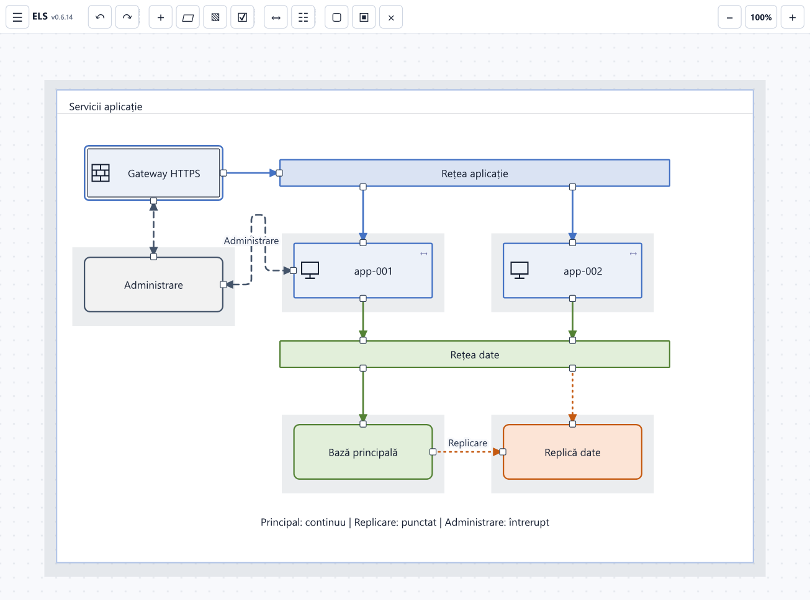
Editorul HTML · Exemplu editabil · Audit de securitate
Ce poți coordona în aceeași diagramă
| Ce vrei să obții | Instrumentul din ELS |
|---|---|
| Noduri, centre și porturi pe aceleași repere | Grilă geometrică comună |
| Componente aliniate, cu dimensiuni și distanțe egale | Aliniere, egalizare și distribuire |
| Legături directe fără deplasarea echipamentelor | Mutarea portului și alinierea lui la un nod reper |
| O structură întreagă mutată cu legăturile păstrate | Containere și grupări ierarhice |
| Aceleași proprietăți pe instanțe din zone diferite | Noduri sincronizate și serii numerotate |
| Editarea unei selecții și ca date, într-un alt program | Copiere și lipire ca JSON |
Încearcă pe o diagramă completă
- Descarcă HTML-ul editorului și deschide-l în browser. Pe GitHub, folosește Download raw file din pagina fișierului.
- Apasă Exemplu pe planșa goală sau în Meniu → Despre ELS → Exemplu. Diagrama curentă este păstrată separat.
- Exemplul include prezentare, procesare, date, administrare și recuperare: 43 de noduri, 79 de porturi și 34 de conexiuni. Atelierul din dreapta oferă obiecte pe care poți exersa.
Imaginile de mai jos sunt detalii din editor, cu scene demonstrative dedicate fiecărei operații. Perechile înainte/după păstrează aceeași încadrare. Pentru a vedea detaliile la dimensiunea originală, deschide imaginea.
1. Aceeași geometrie pentru noduri, dimensiuni și porturi
Grila nu este doar un fundal cu puncte. Când fixarea este activă, editorul folosește aceeași celulă pentru pozițiile nodurilor, dimensiunile lor și pozițiile porturilor pe contur. Porturile centrale pot fi păstrate pe repere compatibile cu nodurile așezate deasupra, dedesubt sau lateral.
Cum lucrezi
- Deschide Meniu → Grilă și aliniere.
- Alege Mărimea celulei și activează Fixare pe grilă și ghidaje.
- Pentru o diagramă existentă, folosește Adaptează la grilă pe selecție sau pe întreaga diagramă.
- Adaugă ori mută nodurile și porturile pe această geometrie comună.
La pasul implicit de 20, pozițiile unui nod sunt multipli de 20, iar dimensiunile nodurilor adaptate folosesc un număr par de celule. Astfel, și mijlocul unei laturi poate cădea pe grilă. Distanța implicită între porturile aceleiași laturi este de două celule; nodul crește dacă nu este suficient spațiu.
Exemplu: două noduri de aceeași lățime, așezate pe aceeași coloană, au porturile centrale N/S pe aceeași verticală. Conexiunea poate fi directă, fără reglarea individuală a unor coordonate fracționare.
Ce rămâne stabil
- Zoomul modifică vederea, nu coordonatele și pasul de fixare.
- La zoom mic se răresc punctele desenate; geometria de editare rămâne aceeași.
- Redimensionarea păstrează sloturile porturilor existente. Schimbarea numărului de porturi redistribuie porturile pe latura respectivă.
- Un generator poate calcula pozițiile în celule și poate importa diagrama deja aliniată.
Reguli geometrice și exemplu de fișier în celule
Ghidaje în timpul mutării
La apropierea de un reper, editorul poate fixa nodul după margini, centre, porturi și distanțe egale între vecini. Porturile componentelor conectate au prioritate între reperele apropiate. Fixarea caută o poziție compatibilă cu grila activă.
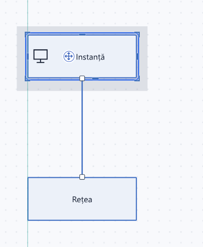
În această demonstrație, cursorul este deplasat puțin lateral în timp ce nodul coboară. Nodul rămâne pe axa portului conectat, iar ghidajul marchează reperul. Ghidajele dispar după eliberarea tragerii; coordonatele rămân pe grilă.
2. Aliniere, distribuire și dimensiuni egale pentru noduri
Poți coordona separat trei lucruri: poziția, dimensiunea și spațiul dintre obiecte. Comenzile funcționează și pentru containere; mutarea unui container prin aliniere deplasează și copiii lui.
Exemplu complet: trei instanțe așezate uniform
Înainte: nodurile au înălțimi, lățimi și poziții verticale diferite.
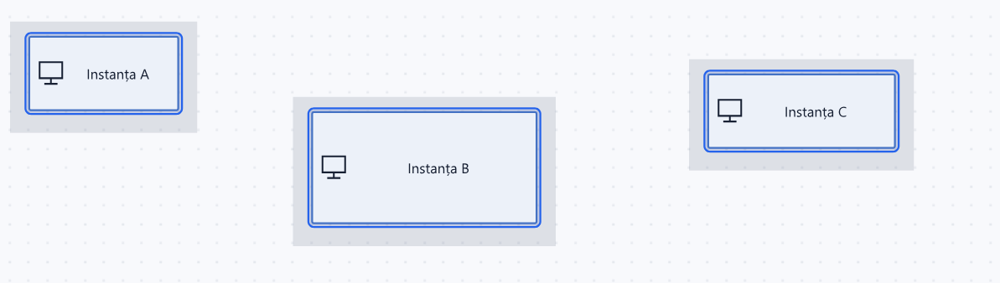
- Selectează primul nod, apoi adaugă celelalte două cu Shift+clic.
- Deschide Aliniere (☷) și alege Aliniază sus.
- Alege Aceeași mărime pentru a uniformiza lățimea și înălțimea.
- Alege Distribuie egal pe orizontală pentru spații egale între componente.
După: aceeași margine superioară, aceleași dimensiuni și spații egale, pe grila activă.
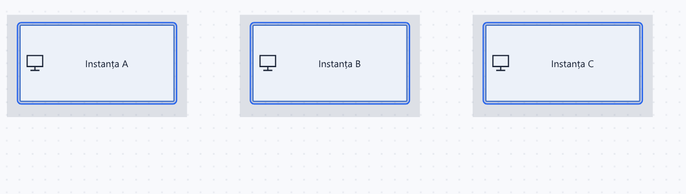
Ce face fiecare comandă
| Comandă | Rezultat |
|---|---|
| Stânga / dreapta / sus / jos | Aliniază marginile nodurilor |
| Centrează orizontal | Aduce centrele pe aceeași coordonată X |
| Centrează vertical | Aduce centrele pe aceeași coordonată Y |
| Distribuie egal pe orizontală / verticală | Egalizează spațiile libere dintre cel puțin trei noduri |
| Aceeași lățime / înălțime / mărime | Folosește dimensiunea maximă corespunzătoare din selecție, adaptată grilei |
Marginile și centrele de aliniere se calculează din limitele întregii selecții. Distribuirea egalizează spațiul dintre contururi, ceea ce este util și când componentele au lățimi diferite. Pozițiile rezultate respectă grila dacă fixarea este activă.
Pentru o listă verticală: selectează elementele, aliniază-le la stânga și distribuie-le vertical. Poți uniformiza numai lățimea, păstrând înălțimile necesare conținutului.
3. Porturi mobile, selectabile și aliniate la repere
Portul este un punct de conectare al nodului, cu identitate proprie, de exemplu S2. Poți schimba poziția portului fără să muți nodul, să-i schimbi dimensiunea sau să refaci conexiunea.
3.1. Mută un port pentru o conexiune directă
Înainte: portul S2 este decalat față de instanța B, iar legătura are un traseu lateral.
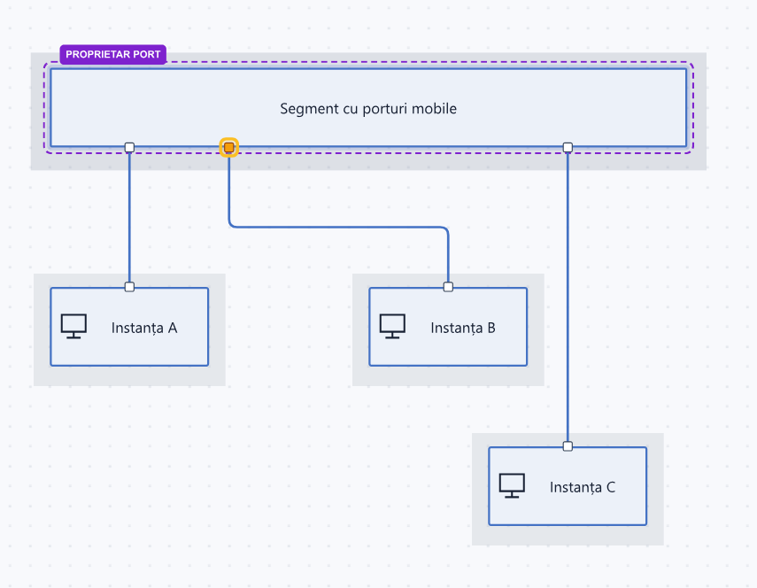
- Selectează nodul care deține portul.
- Activează Mută porturi din bara selecției.
- Trage portul pe latura lui. Cu grila activă, poziția se fixează pe celule.
- Eliberează portul în dreptul componentei conectate.
După: S2 este pe verticala instanței B. Nodurile au rămas la aceleași coordonate și dimensiuni, iar conexiunea folosește în continuare S2.
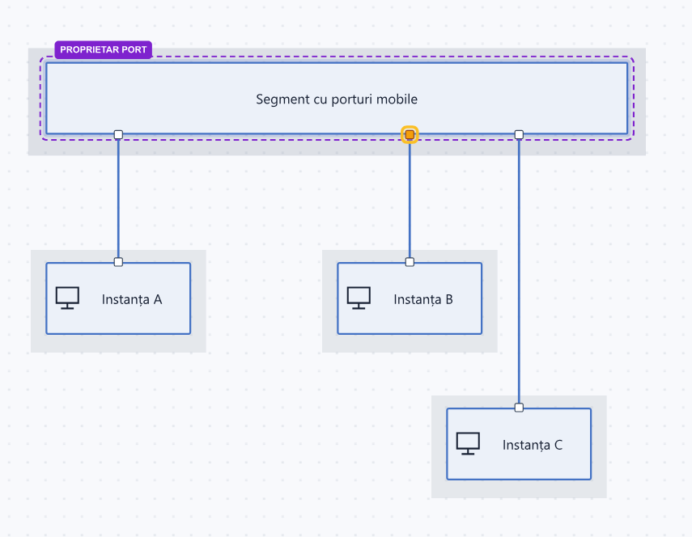
La nodurile nerotite, porturile N/S se deplasează de-a lungul laturii pe orizontală; E/W, pe verticală. Mutarea nu schimbă latura și nu redenumește portul. Numărul de porturi se ajustează separat, cu N / E / S / W. La rotirea nodului, porturile urmează conturul acestuia.
3.2. Aliniază un port la centrul sau marginea altui nod
Poți folosi o componentă drept reper pentru poziția portului. Nu trebuie să estimezi manual unde se află centrul ei.
- Selectează nodul proprietar și activează Mută porturi.
- Folosește Shift+clic pe portul de aliniat.
- Folosește Shift+clic pe celălalt nod, ales ca reper.
- Verifică marcajele: PROPRIETAR PORT, portul evidențiat și REPER pe componenta de referință.
- Deschide Aliniere și alege direcția potrivită. Pentru un port N/S și centrul nodului reper, folosește Centrează orizontal.
Înainte: proprietarul și reperul sunt marcate, iar portul este decalat.
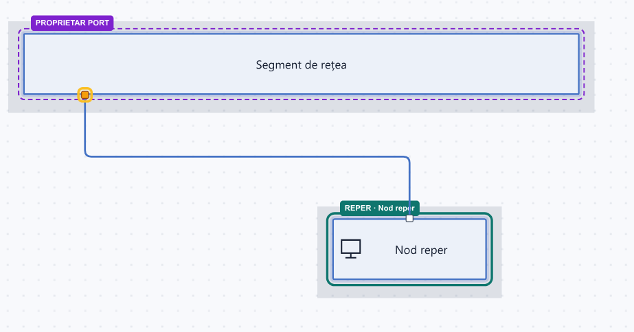
După: portul ajunge pe verticala centrului reperului. Nici proprietarul, nici reperul nu au fost mutate.
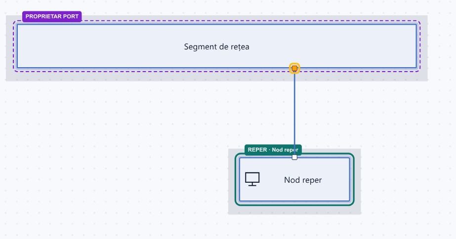
Pentru porturile E/W, folosește alinierea pe coordonata Y. Sunt disponibile și marginile reperului, nu numai centrul. Cu mai multe noduri reper, ținta se calculează din limitele lor comune. Poziția trebuie să poată fi atinsă pe latura portului; editorul nu mută portul pe altă latură pentru a forța alinierea.
3.3. Distribuie uniform porturile selectate
Poți egaliza distanțele dintre porturi fără să le ștergi și să le creezi din nou.
- În Mută porturi, selectează cu Shift+clic cel puțin trei porturi mobile pe aceeași axă.
- Deschide Aliniere.
- Alege distribuirea pe orizontală pentru N/S sau pe verticală pentru E/W.
Înainte: trei porturi selectate, cu spațieri diferite.
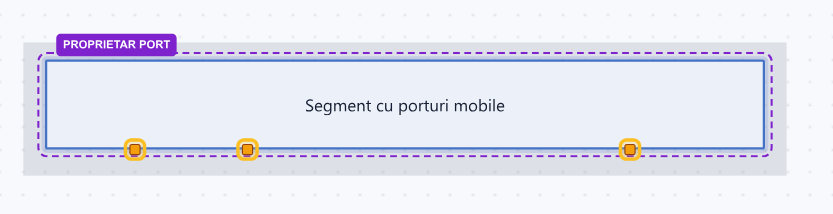
După: intervale egale, pe grila activă.
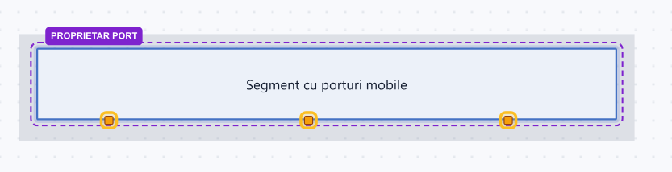
Fără nod reper, distribuirea folosește intervalul dintre porturile extreme selectate. Cu repere selectate, folosește limitele acestora. Pentru porturi N/S nu alege o comandă de deplasare verticală: axa disponibilă este cea a laturii lor.
4. Containere și grupări care păstrează structura
O grupare ierarhică are un părinte și copii. Poți construi o zonă cu rețele și mașini virtuale, apoi muta zona ca ansamblu. Conexiunile copiilor cu elementele din exterior continuă să le urmărească.
Creează și mută o grupare
- Adaugă un chenar prin Grup, din bară, sau folosește un nod de tip Container.
- Selectează o componentă și trage-o în interior, astfel încât să încapă în container.
- Poți introduce și alte containere, pentru niveluri succesive.
- Selectează containerul pe o zonă liberă și mută-l. Copiii primesc aceeași deplasare.
Înainte: serviciul și rețeaua internă aparțin containerului; serviciul exterior este independent.
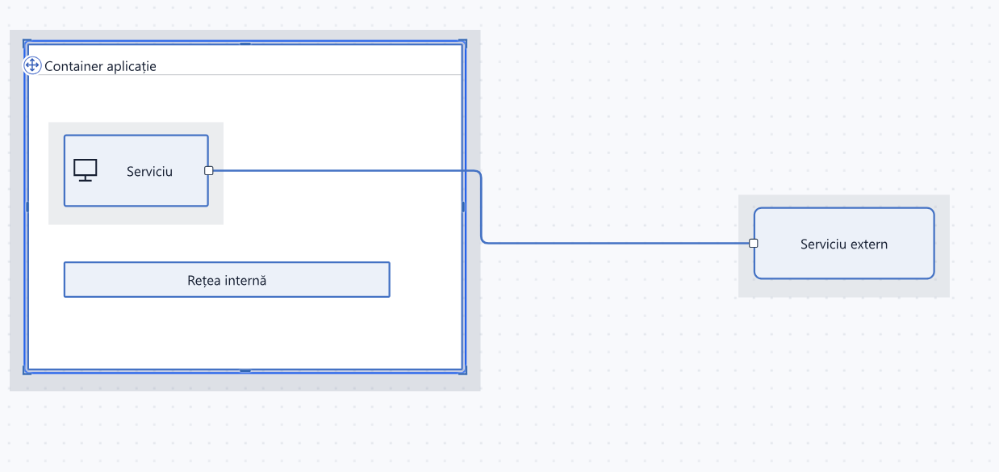
După: containerul și copiii au fost deplasați împreună; elementul exterior a rămas fix, iar conexiunea s-a actualizat.
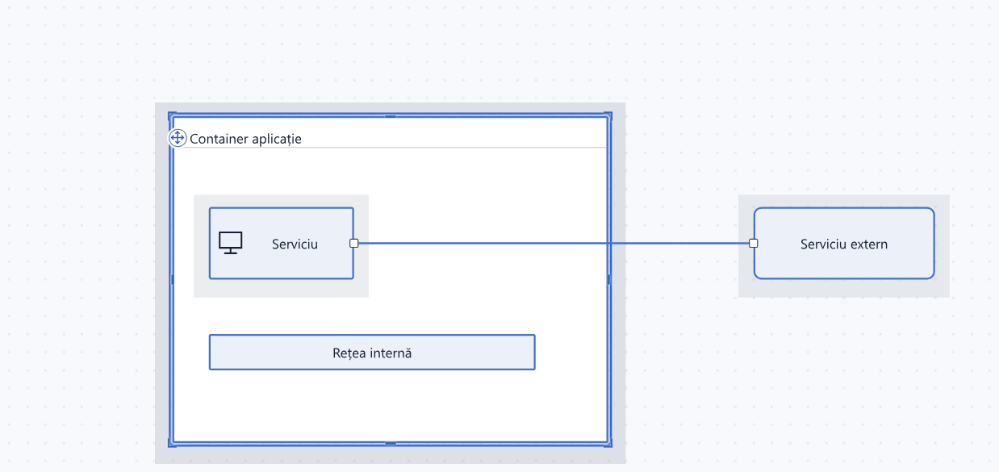
Selectarea copiilor și spațiul containerului
- Clic pe un copil îl selectează separat; Shift+clic permite selecții multiple și între noduri înglobate.
- Dacă vrei să navighezi, trage peste un nod neselectat sau peste fundal: se deplasează vederea, fără pierderea selecției.
- Redimensionarea ține cont de spațiul necesar copiilor. Un container nu se restrânge arbitrar peste conținut.
- Alinierea unui container mută și descendenții lui. Poți alinia zone întregi fără reașezarea fiecărui copil.
| Mecanism | Ce leagă între obiecte |
|---|---|
| Selecție multiplă | Obiectele asupra cărora aplici operația curentă |
| Container / chenar | Apartenența și deplasarea unei structuri |
| Grup sincronizat | Proprietățile care se propagă între membri |
5. Noduri sincronizate, inclusiv în containere diferite
Un grup sincronizat menține proprietăți comune între componente asociate explicit. Nu trebuie să fie una lângă alta sau în același container. Pozițiile și apartenența la containere pot rămâne independente.
Creează grupul și alege ce se propagă
- Selectează cel puțin două noduri fără grup sincronizat, folosind Shift+clic.
- În panoul selecției, deschide Noduri sincronizate.
- Dă un nume grupului și alege Același nume sau Serie numerotată.
- Bifează proprietățile comune și apasă Creează grup.
- Selectează un singur membru. Editorul evidențiază și ceilalți membri ai grupului.
| Proprietate comună | Ce înseamnă |
|---|---|
| Nume | Denumire comună sau nume generate după seria grupului |
| Lățime / înălțime | Redimensionarea unui membru se propagă celorlalți |
| Fundal / contur / culoare text | Stilul bifat rămâne comun |
| Proprietate nebifată | Poate fi editată independent pe fiecare membru |
Exemplu: redimensionezi o instanță și se actualizează celelalte
Înainte: trei instanțe sincronizate sunt în trei containere diferite. Un singur membru este selectat, iar ceilalți sunt evidențiați.
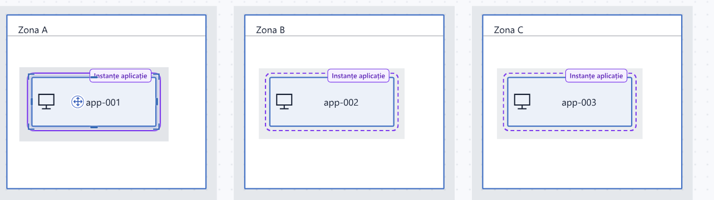
Trage mânerul din dreapta al primului nod, cu Lățime bifată în regulile grupului.
După: toate cele trei instanțe au noua lățime. Numele, identificatorii, coordonatele și containerele lor sunt păstrate.
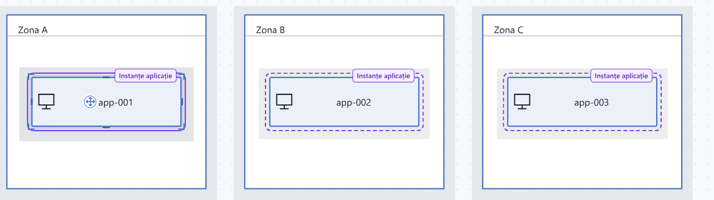
Modificarea propagată intră într-o singură operație Undo. Ctrl+Z readuce grupul la dimensiunea anterioară; Ctrl+Y reface operația.
Serii numerotate fără editarea fiecărui nume
Seria este formată din prefix + număr completat cu zerouri + sufix.
| Configurare | Nume rezultate |
|---|---|
Prefix app-, început 1, trei cifre |
app-001, app-002, app-003 |
Prefix worker-, început 7, două cifre, sufix -test |
worker-07-test, worker-08-test |
| Același nume | O denumire comună, fără contor |
Schimbarea regulilor păstrează numărul existent al fiecărui membru. Pentru a atribui din nou numerele, folosește explicit Previzualizează renumerotarea, verifică numele vechi și noi, apoi apasă Confirmă renumerotarea.
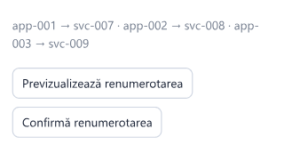
În această previzualizare, numele din model nu s-au schimbat încă. Confirmarea aplică seria svc-007, svc-008, svc-009 și poate fi anulată prin Undo.
Vezi membrii, desprinde un nod sau copiază grupul
Panoul arată numele grupului, numărul membrilor și lista lor. Arată membrii evidențiază grupul. Desprinde selecția oprește sincronizarea membrilor aleși, fără să renumeroteze automat ceilalți membri.
La copiere și lipire, grupul copiat primește o identitate nouă și rămâne separat de original. Poți crea un al doilea set de instanțe și îi poți schimba regulile fără propagare în grupul din care a fost copiat.
6. Aceeași selecție poate fi desen și date JSON
Copierea din ELS produce text JSON cu nodurile selectate, copiii, porturile, proprietățile și conexiunile dintre elementele copiate. Poți edita acest text într-un alt program și îl poți lipi înapoi ca obiecte vizuale editabile.
- Selectează componentele și apasă Ctrl+C.
- În Notepad sau Visual Studio Code, apasă Ctrl+V: apare JSON ELS.
- Modifică nume, dimensiuni ori coordonate, păstrând identificatorii și referințele dintre elemente consecvente.
- Copiază întregul JSON rezultat și revino pe planșa ELS, în afara editării unui câmp de text.
- Apasă Ctrl+V. Nodurile și conexiunile sunt desenate automat, cu identificatori noi.
Exemplu practic: pregătești mai multe instanțe prin modificarea unui text, apoi continui vizual în editor. Un grup sincronizat copiat rămâne independent de original, iar ierarhia și relațiile din selecție se păstrează.
Un obiect JSON care poate fi lipit pe planșă
Cele două noduri de mai jos au porturile centrale pe aceeași verticală:
{
"format": "els",
"version": 1,
"geometry": { "version": 1, "cell": 20 },
"nodes": [
{
"id": "a", "label": "Serviciu",
"x": 160, "y": 80, "manualW": 200, "manualH": 80,
"ports": { "S": 1 }
},
{
"id": "b", "label": "Date",
"x": 160, "y": 280, "manualW": 200, "manualH": 80,
"ports": { "N": 1 }
}
],
"edges": [
{ "id": "ab", "from": "a", "to": "b", "fromPort": "S1", "toPort": "N1" }
]
}
Lipirea adaugă în diagrama curentă. Importul unui fișier înlocuiește conținutul activ, după validare. Comenzile barei oferă și clipboard intern; accesul direct la clipboardul sistemului depinde de permisiunile browserului.
Pentru generatoare care lucrează în celule și pentru API-ul local, consultă geometria și documentația tehnică.
7. Trasee și etichete editabile fără pierderea legăturilor
Conexiunile urmăresc nodurile și porturile. Pentru trasee impuse explicit poți introduce mai multe puncte manuale și poți reconecta capetele, păstrând punctele intermediare.
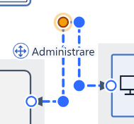
- Clic pe linie afișează capetele și coturile, inclusiv cele ale traseului automat.
- Punct selectat permite alegerea din panou; punctul activ are marcaj persistent.
- Adaugă punct sau dublu clic inserează un cot. Eliminarea unui punct intermediar păstrează conexiunea.
- Trage un capăt pentru a-l reconecta. Traseu automat renunță explicit la punctele manuale.
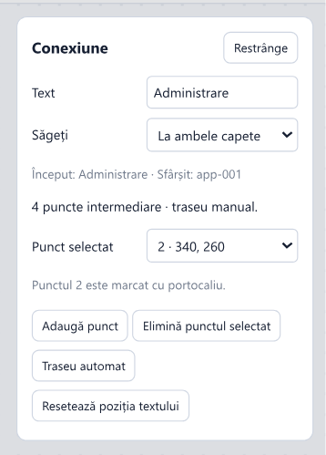
Textul nodului și textul liniei au același tip de mâner pentru mutare. Etichetele rămân lângă obiectul lor, fără să deplaseze porturile ori traseul. Nodurile acceptă încadrare automată, rânduri manuale cu Shift+Enter și un singur rând. Text redus definește separat denumirea folosită la zoom mic, păstrând numele complet pentru editare.
Lucru local, fișiere și prezentare
ELS include codul, stilurile, simbolurile și exemplul în HTML. Funcționează fără instalarea editorului, fără cont, fără server obligatoriu și fără descărcarea unor biblioteci sau fonturi. Poate fi folosit fără internet, inclusiv într-o rețea izolată.
HTML-ul este editorul. ELS JSON este diagrama. Pentru transfer pe alt calculator, copiază ambele fișiere. Biblioteca browserului nu este încorporată în HTML.
Salvare și copii de lucru
Diagrame locale permite creare, schimbare, redenumire, ștergere și salvarea unei copii. Editările sunt salvate automat în browser. Pentru o variantă nouă, salvează mai întâi o copie; pentru păstrare în afara browserului, folosește Export ELS.
Biblioteca aparține profilului browserului și adresei editorului. Alt browser sau altă adresă poate afișa o bibliotecă diferită. Ștergerea datelor browserului sau resetarea completă ELS poate elimina datele locale.
Formate de export
| Format | Utilizare |
|---|---|
| ELS JSON | Diagrama editabilă: ierarhii, porturi, stiluri, puncte și grupuri sincronizate |
| SVG | Forme vectoriale pentru documente și imprimare |
| PNG / JPG | Imagini raster la scara aleasă |
| Mermaid | Noduri și relații descrise ca text, pentru documentație |
Scara imaginii exportate poate urma zoomul curent sau o valoare explicită, precum 100% ori 200%. Exporturile grafice includ textele, stilurile, porturile, punctele manuale și săgețile. Mermaid nu păstrează întreaga geometrie și toate proprietățile ELS; importul Mermaid și exporturile YAML/XML nu sunt disponibile.
Zoom și prezentare
Rotița, comenzile - / +, revenirea la 100% și încadrarea selecției sau a diagramei schimbă vederea, fără modificarea coordonatelor. Pe ecrane tactile poți folosi două degete. Prezentare ascunde bara, iar Escape revine la editor.
Alte instrumente de editare și stilizare
- Tipuri de nod: echipament general, mașină virtuală, firewall, segment de rețea și container, cu forme ori simboluri distincte.
- Redimensionare și rotire: mânere de latură și colț; rotire în pași de +15° și -15°; revenire la postura implicită.
- Aspect: fundal, contur și text configurabile separat; paletă, cod de culoare, transparență și resetare.
- Stiluri de linie: continuu, întrerupt sau punctat; săgeți la început, la sfârșit, la ambele capete ori fără săgeți.
- Bara de unelte: Iconițe sau Text, unelte activate selectiv, reordonare și grupuri configurabile. Resetarea revine la configurația implicită și zoom 100%.
Comenzi uzuale
| Gest sau comandă | Efect |
|---|---|
| Clic pe obiect | Selectează nodul sau conexiunea |
| Shift+clic pe nod | Adaugă sau elimină nodul din selecție |
| Shift+clic pe port, în Mută porturi | Adaugă sau elimină portul din selecția de porturi |
| Ctrl+A / Tot | Selectează toate nodurile |
| Tragere pe nod selectat | Mută selecția |
| Tragere pe fundal sau nod neselectat | Deplasează vederea, păstrând selecția |
| Dublu clic pe fundal | Adaugă un nod |
| Dublu clic pe etichetă / Text | Editează textul |
| Ctrl+C / Ctrl+V | Copiază sau lipește JSON ELS |
| Ctrl+Z / Ctrl+Y | Anulează / reface, inclusiv modificările propagate |
| Delete / Șterge | Șterge selecția |
| Escape în prezentare | Revine la editor |
Comenzile de diagramă se aplică atunci când nu scrii într-un câmp de text.
Date și securitate
Importurile ELS JSON sunt validate înainte de aplicare. Auditul de securitate pentru ELS 0.6.14 identifică prin SHA-256 exact HTML-ul evaluat și consemnează metodele, rezultatele și dovezile; nu este o certificare.
Instalarea uneltelor, sursa, automatizarea și testele sunt descrise separat în ghidul de dezvoltare.